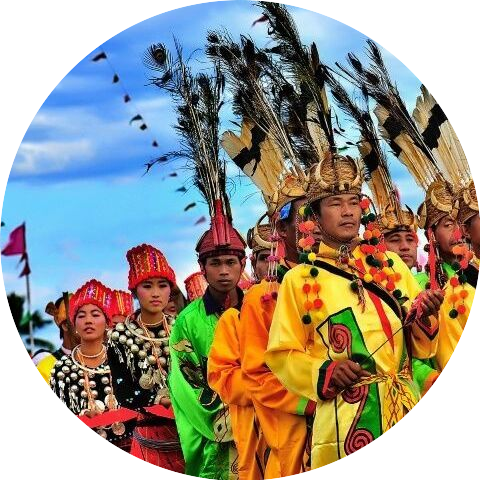
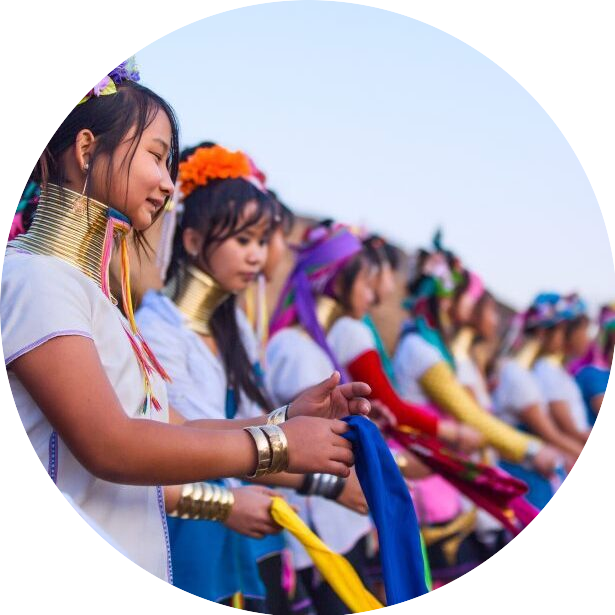
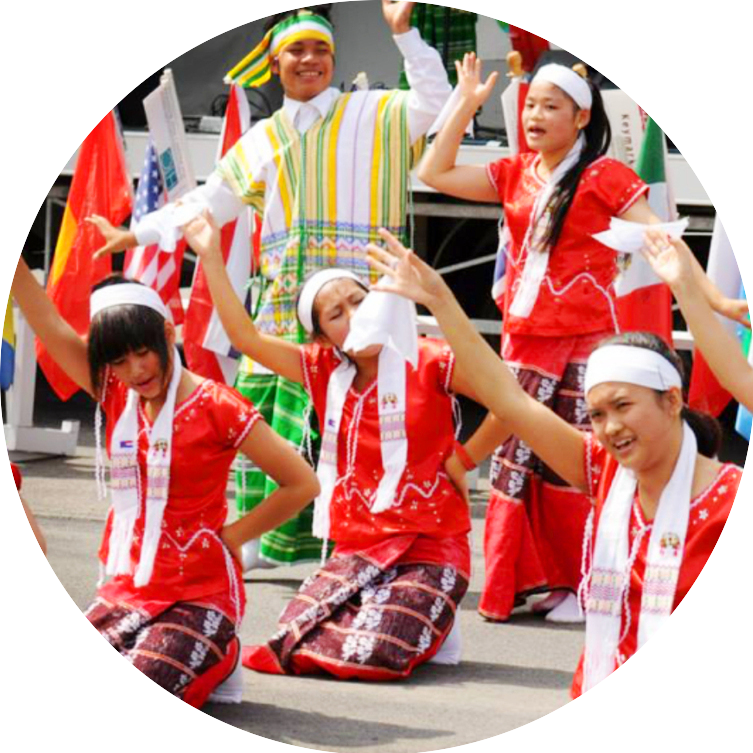
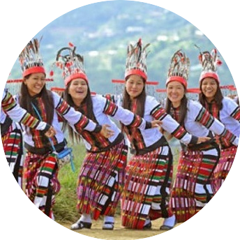
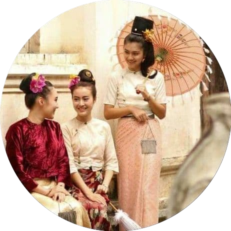
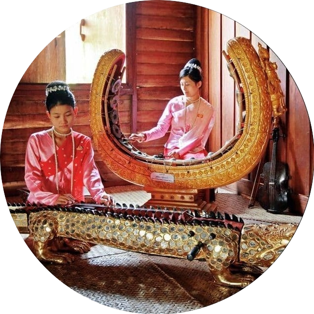
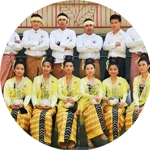
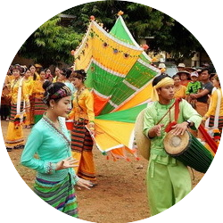

The Kachin peoples, more precisely the Kachin Wunpong or simply Wunpong, are a confederation of ethnic groups who inhabit the Kachin Hills in northern Myanmar's Kachin State and neighbouring Yunnan Province, China, and Arunachal Pradesh, Assam in Northeastern India. About one million Kachin peoples live in the region.
The Kayah, who live on the southern edge of the Shan Plateau, were once known as the Red Karen, or Karenni, apparently for their red robes. Although ethnically and linguistically Karen, they tend to maintain their own identity and hereditary leadership.
The Karen, also known as the Kayin, Kariang or Kawthoolese, are an ethnolinguistic group of Sino-Tibetan language–speaking peoples. The group as a whole is heterogeneous and disparate as many Karen ethnic groups do not associate or identify with each other culturally or linguistically.
The Chin people are a Southeast Asian Zo people native to Chin State of Myanmar. The Chin are one of the founding groups of the Union of Burma. The Chin speak a variety of related languages, share elements of cultures and traditions.
The Bamar or Burman are a Southeast Asian Sino-Tibetan ethnic group native to Myanmar. The Bamar live primarily in the Irrawaddy River basin and speak the Burmese language, which is the sole official language of Myanmar at a national level.
The Mon are an ethnic group who inhabit Lower Myanmar's Mon State, Kayin State, Kayah State, Tanintharyi Region, Bago Region, the Irrawaddy Delta, and several areas in Thailand.Mon, also spelled Mun, Burmese Talaing, people living in the eastern delta region of Myanmar (Burma) and in west-central Thailand, numbering in the early 21st century somewhere between one and five million, though less than a third speak the Mon language.
The Rakhine people or Arakanese people are a Southeast Asian ethnic group in Myanmar forming the majority along the coastal region of present-day Rakhine State. They possibly constitute 5.53% or more of Myanmar's total population, but no accurate census figures exist.
Shan, Shan Tai, Southeast Asian people who live primarily in eastern and northwestern Myanmar (Burma) and also in Yunnan province, China. The Shan are the largest minority group in Myanmar. In the late 20th century they numbered more than 4 million. Their language, commonly known as Shan, which also includes the Thai and Lao languages. Most Shan, however, with the exception of those living in the relatively isolated easternmost strip of Myanmar, are closer culturally to the Burman people.
